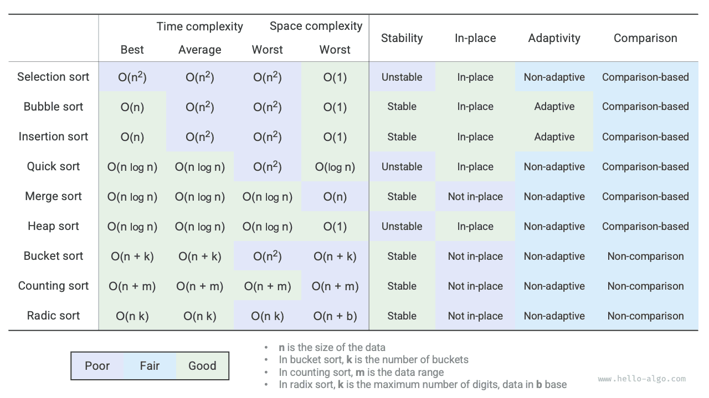

الترتيب
ملخص
مراجعة النقاط الرئيسية
- يحقّق ترتيب الفقاعات الترتيب عبر تبديل العناصر المتجاورة. وبإضافة علامة تتيح الخروج المبكر، يمكن تحسين التعقيد الزمني لترتيب الفقاعات في أفضل حالة إلى $O(n)$.
- في كل جولة، يُدرج ترتيب الإدراج عنصراً من الجزء غير المرتّب في موضعه الصحيح داخل الجزء المرتّب. ورغم أن التعقيد الزمني لترتيب الإدراج هو $O(n^2)$، فإنه يظل شائعاً جداً في مهام الترتيب الصغيرة لأن كل عملية منه خفيفة نسبياً.
- يعتمد الترتيب السريع على التقسيم بالمحمّي (sentinel partitioning). وفي التقسيم بالمحمّي، قد يؤدي اختيار أسوأ محور ممكن مراراً إلى تدهور التعقيد الزمني إلى $O(n^2)$. ويمكن لاختيار محور وسيطي أو محور عشوائي أن يقلل احتمال هذا التدهور. وبتعاود المصفوفة الفرعية الأقصر أولاً، يمكن تقليل عمق التعاود بفعالية وتحسين التعقيد المكاني إلى $O(\log n)$.
- يشمل ترتيب الدمج مرحلتين: التقسيم والدمج، وهما تجسيدان عادةً لاستراتيجية التقسيم والتغلب. وفي ترتيب الدمج يتطلب ترتيب مصفوفة إنشاء مصفوفات مساعدة، بتعقيد مكاني $O(n)$؛ غير أن التعقيد المكاني لترتيب قائمة مترابطة يمكن تحسينه إلى $O(1)$.
- يتكوّن ترتيب الدلاء من ثلاث خطوات: توزيع البيانات على الدلاء، والترتيب داخل الدلاء، ودمج النتائج. وهو يجسّد أيضاً استراتيجية التقسيم والتغلب ويصلح لحجوم بيانات كبيرة جداً. ومفتاح ترتيب الدلاء هو توزيع البيانات بالتساوي.
- ترتيب العدّي حالة خاصة من ترتيب الدلاء، يحقّق الترتيب عبر عدّ عدد مرات ظهور البيانات. ويصلح ترتيب العدّي للحالات التي يكون فيها حجم البيانات كبيراً لكن نطاق البيانات محدوداً، ويشترط إمكانية تحويل البيانات إلى أعداد صحيحة موجبة.
- يحقّق الترتيب الجذري ترتيب البيانات عبر الترتيب خانةً خانة، ويشترط إمكانية تمثيل البيانات بأعداد ذات خانات ثابتة.
- إجمالاً، نأمل في إيجاد خوارزمية ترتيب فعّالة ومستقرة وفي المكان وتكيّفية. غير أنه، كما هو الحال مع بنى البيانات والخوارزميات الأخرى، لا توجد خوارزمية ترتيب تستطيع تلبية هذه المعايير كلها في آن واحد. وفي الممارسة العملية، يلزمنا اختيار خوارزمية الترتيب المناسبة بناءً على خصائص البيانات.
- يقارن الشكل أدناه خوارزميات الترتيب السائدة من حيث الكفاءة والاستقرار وصفة الترتيب في المكان والقدرة على التكيّف.

أسئلة وأجوبة
س: في أي الحالات يكون استقرار خوارزميات الترتيب ضرورياً؟
قد نرتّب في الواقع وفق سمة معينة من سمات الكائنات. فمثلاً للطلاب سمتان: الاسم والطول. ونريد تنفيذ ترتيب متعدد المستويات: أولاً الترتيب حسب الاسم للحصول على (A, 180) (B, 185) (C, 170) (D, 170)؛ ثم الترتيب حسب الطول. ولأن خوارزمية الترتيب غير مستقرة، فقد نحصل على (D, 170) (C, 170) (A, 180) (B, 185).
ويمكننا أن نلاحظ أن الطالبين D وC قد تبادلا موضعيهما، مما أفسد الترتيب حسب الاسم، وهو ما لا نريده.
س: هل يمكن تبديل ترتيب «البحث من اليمين إلى اليسار» و«البحث من اليسار إلى اليمين» في التقسيم بالمحمّي؟
لا. فعندما نستخدم العنصر الأيسر محوراً، يجب أن «نبحث من اليمين إلى اليسار» أولاً ثم «نبحث من اليسار إلى اليمين». وهذا الاستنتاج مخالف للحدس نوعاً ما؛ فلنحلل السبب.
الخطوة الأخيرة في التقسيم بالمحمّي partition() هي تبديل nums[left] وnums[i]. وبعد اكتمال التبديل، تكون جميع العناصر الواقعة على يسار المحور <= المحور، وهذا يقتضي أن يتحقق nums[left] >= nums[i] قبل التبديل الأخير. لنفترض أننا «بحثنا من اليسار إلى اليمين» أولاً؛ فإذا لم نجد عنصراً أكبر من المحور، فسنخرج من الحلقة عندما i == j، وقد يكون عندئذٍ nums[j] == nums[i] > nums[left]. بعبارة أخرى، ستبدّل عملية التبديل الأخيرة عنصراً أكبر من المحور إلى الطرف الأيسر من المصفوفة، مما يؤدي إلى فشل التقسيم بالمحمّي.
على سبيل المثال، بمعطى المصفوفة [0, 0, 0, 0, 1]، إذا «بحثنا من اليسار إلى اليمين» أولاً، تصبح المصفوفة بعد التقسيم بالمحمّي [1, 0, 0, 0, 0]، وهو خطأ.
وبالمنطق نفسه، إذا اخترنا nums[right] محوراً، ينعكس الترتيب: يجب أن «نبحث من اليسار إلى اليمين» أولاً.
س: بخصوص تحسين عمق التعاود في الترتيب السريع، لماذا يضمن اختيار المصفوفة الأقصر ألا يتجاوز عمق التعاود $\log n$؟
عمق التعاود هو عدد الاستدعاءات التعاودية التي لم تعد بعد. وتقسّم كل جولة من التقسيم بالمحمّي المصفوفة الأصلية إلى مصفوفتين فرعيتين. وبعد هذا التحسين، يكون طول المصفوفة الفرعية المختارة لمواصلة التعاود نصف طول المصفوفة الأصلية على الأكثر. وفي أسوأ الحالات، إذا كان الطول دائماً نصف الطول، يكون عمق التعاود النهائي $\log n$.
وبمراجعة الترتيب السريع الأصلي، قد نواصل التعاود على المصفوفة الأطول. وفي أسوأ الحالات سيكون $n$ و$n - 1$ و$\dots$ و$2$ و$1$، بعمق تعاود $n$. ويمكن لتحسين عمق التعاود تجنّب هذه الحالة.
س: عندما تكون جميع العناصر في المصفوفة متساوية، هل يكون التعقيد الزمني للترتيب السريع $O(n^2)$؟ وكيف ينبغي التعامل مع هذه الحالة المتدهورة؟
نعم. في هذه الحالة يمكن تقسيم المصفوفة إلى ثلاثة أجزاء عبر التقسيم بالمحمّي: جزء أصغر من المحور، وجزء مساوٍ له، وجزء أكبر منه. ثم نتعاود على الجزأين الأصغر والأكبر فقط. وبهذا النهج، يمكن ترتيب مصفوفة عناصرها كلها متساوية في جولة واحدة فقط من التقسيم بالمحمّي.
س: لماذا يكون التعقيد الزمني في أسوأ حالة لترتيب الدلاء $O(n^2)$؟
في أسوأ حالة، تُوزَّع جميع العناصر على الدلو نفسه. وإذا استخدمنا خوارزمية بتعقيد $O(n^2)$ لترتيب هذه العناصر، فسيكون التعقيد الزمني $O(n^2)$.